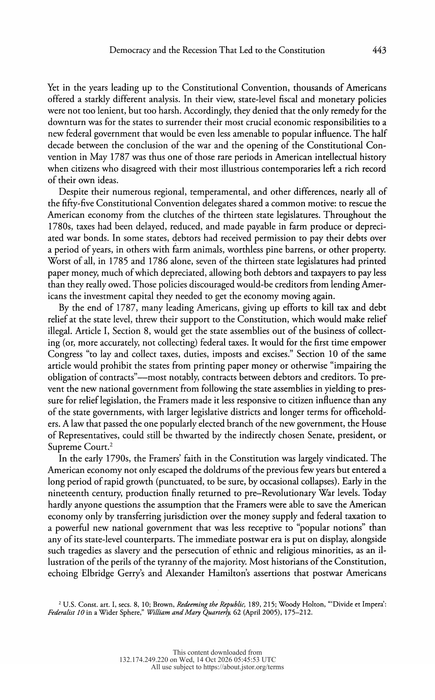
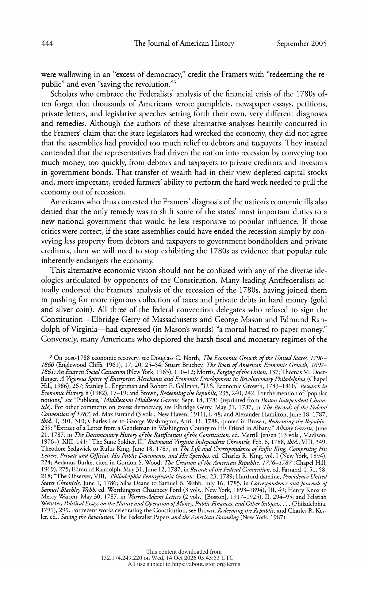

<table style="background-color: #edf6f4; max-width: 820px; margin: 0 auto;" role="presentation" border="0" width="100%" cellspacing="0" cellpadding="0">
<tbody>
<tr>
<td style="padding: 32px 36px 20px 36px;">
<div style="font-family: Arial, Helvetica, sans-serif; color: #14705d; font-size: 13px; margin-bottom: 8px;">Scholarly Article A6.30</div>
<div style="font-family: Georgia, 'Times New Roman', serif; color: #0b4438; font-size: 30px; line-height: 1.2; margin-bottom: 8px;">Did Democracy Cause the Recession That Led to the Constitution?</div>
<div style="font-family: Arial, Helvetica, sans-serif; color: #14705d; font-size: 14px; line-height: 1.5; margin-bottom: 16px;">Woody Holton &middot; 2005</div>
<table style="margin-bottom: 20px;" role="presentation" border="0" width="100%" cellspacing="0" cellpadding="0"><tbody><tr><td style="border-top: 4px solid #EF6449; font-size: 1px; line-height: 1px;">&nbsp;</td></tr></tbody></table>
<table style="background-color: #f6a88e; border-collapse: collapse; margin-bottom: 26px;" role="presentation" border="0" width="100%" cellspacing="0" cellpadding="0"><tbody>
<tr><td style="width: 22%; padding: 12px 12px 8px 14px; font-family: Arial, Helvetica, sans-serif; color: #0b4438; font-size: 12px;" valign="top">TOC FIT</td><td style="padding: 12px 14px 8px 12px; font-family: Arial, Helvetica, sans-serif; color: #0b4438; font-size: 13.5px; line-height: 1.55;" valign="top">Chapter 6 &middot; Essay prompts </td></tr>
<tr><td style="width: 22%; padding: 8px 12px 12px 14px; font-family: Arial, Helvetica, sans-serif; color: #0b4438; font-size: 12px;" valign="top">WHY HERE</td><td style="padding: 8px 14px 12px 12px; font-family: Arial, Helvetica, sans-serif; color: #0b4438; font-size: 13.5px; line-height: 1.55;" valign="top">Sets the Federalist claim that state debt relief and paper money caused the 1780s depression against the relief advocates&#x27; case; framers were reacting to democratic state policy (JSTOR summary).</td></tr>
</tbody></table>
<div style="display: inline-block; font-family: Arial, Helvetica, sans-serif; color: #14705d; font-size: 17px; border-bottom: 2px solid #EF6449; padding-bottom: 4px; margin: 6px 0 14px 0;">Article Information</div>
<p style="font-family: Georgia, 'Times New Roman', serif; color: #0b4438; font-size: 15px; line-height: 1.7; margin: 0 0 14px 0;"><strong>Original article:</strong> Woody Holton, &ldquo;Did Democracy Cause the Recession That Led to the Constitution?,&rdquo; <i>The Journal of American History</i> 92, no. 2 (2005): 442&ndash;469.</p>
<p style="font-family: Georgia, 'Times New Roman', serif; color: #0b4438; font-size: 15px; line-height: 1.7; margin: 0 0 14px 0;"><strong>Reader selection:</strong> Original journal pages 442&ndash;443.</p>
<table style="margin: 4px 0 26px 0;" role="presentation" border="0" width="100%" cellspacing="0" cellpadding="0"><tbody><tr><td style="border-left: 4px solid #EF6449; background-color: rgba(20,112,93,0.07); padding: 12px 16px; font-family: Arial, Helvetica, sans-serif; color: #14705d; font-size: 13px; line-height: 1.6;">Editorial note: The pages below are high-resolution facsimiles of the selected pages from the supplied JSTOR article. Original spelling, capitalization, typography, notes, and pagination are preserved.</td></tr></tbody></table>
<div style="display: inline-block; font-family: Arial, Helvetica, sans-serif; color: #14705d; font-size: 17px; border-bottom: 2px solid #EF6449; padding-bottom: 4px; margin: 6px 0 14px 0;">Article Facsimile</div>
<div style="margin: 0 0 22px 0; text-align: center;"><a href="images/A6.30_Original_Journal_Page_442.jpg" target="_blank" rel="noopener"></a><div style="font-family: Arial, Helvetica, sans-serif; color: #14705d; font-size: 12px; line-height: 1.5; margin-top: 6px;">Original journal page 442 &middot; Select the image to open it at full size.</div></div><div style="margin: 0 0 22px 0; text-align: center;"><a href="images/A6.30_Original_Journal_Page_443.jpg" target="_blank" rel="noopener"></a><div style="font-family: Arial, Helvetica, sans-serif; color: #14705d; font-size: 12px; line-height: 1.5; margin-top: 6px;">Original journal page 443 &middot; Select the image to open it at full size.</div></div>
<div style="display: inline-block; font-family: Arial, Helvetica, sans-serif; color: #14705d; font-size: 17px; border-bottom: 2px solid #EF6449; padding-bottom: 4px; margin: 6px 0 14px 0;">Chicago Citations</div>
<div style="font-family: Arial, Helvetica, sans-serif; color: #14705d; font-size: 13px; margin: 4px 0 6px 0;">Bibliography entry:</div>
<p style="font-family: Georgia, 'Times New Roman', serif; color: #0b4438; font-size: 15px; line-height: 1.7; margin: 0 0 16px 0; padding-left: 36px; text-indent: -36px;">Holton, Woody. &ldquo;Did Democracy Cause the Recession That Led to the Constitution?.&rdquo; <i>The Journal of American History</i> 92, no. 2 (2005): 442&ndash;469. <a style="color: #14705d; text-decoration: underline;" href="https://doi.org/10.2307/3659274">https://doi.org/10.2307/3659274</a>.</p>
<div style="font-family: Arial, Helvetica, sans-serif; color: #14705d; font-size: 13px; margin: 4px 0 6px 0;">Footnote citation:</div>
<p style="font-family: Georgia, 'Times New Roman', serif; color: #0b4438; font-size: 15px; line-height: 1.7; margin: 0 0 16px 0;">Woody Holton, &ldquo;Did Democracy Cause the Recession That Led to the Constitution?,&rdquo; <i>The Journal of American History</i> 92, no. 2 (2005): 442&ndash;443, <a style="color: #14705d; text-decoration: underline;" href="https://doi.org/10.2307/3659274">https://doi.org/10.2307/3659274</a>.</p>
<div style="font-family: Arial, Helvetica, sans-serif; color: #14705d; font-size: 13px; margin: 4px 0 6px 0;">Shortened citation:</div>
<p style="font-family: Georgia, 'Times New Roman', serif; color: #0b4438; font-size: 15px; line-height: 1.7; margin: 0 0 16px 0;">Holton, &ldquo;Did Democracy Cause the Recession That Led,&rdquo; 442&ndash;443.</p>
</td></tr>
<tr><td style="padding: 0 36px 22px 36px;"><table style="margin-top: 10px;" role="presentation" border="0" width="100%" cellspacing="0" cellpadding="0"><tbody><tr><td style="padding-top: 12px; border-top: 1px solid #EF6449; font-family: Arial, Helvetica, sans-serif; color: #14705d; font-size: 11px; text-align: center;">UNIT 2 &middot; BUILDING A NATION | HISTORY B17A | DANIEL GARZA, M.A.</td></tr></tbody></table></td></tr>
</tbody></table>